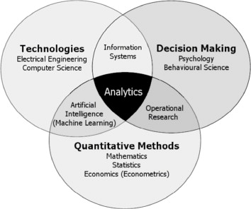
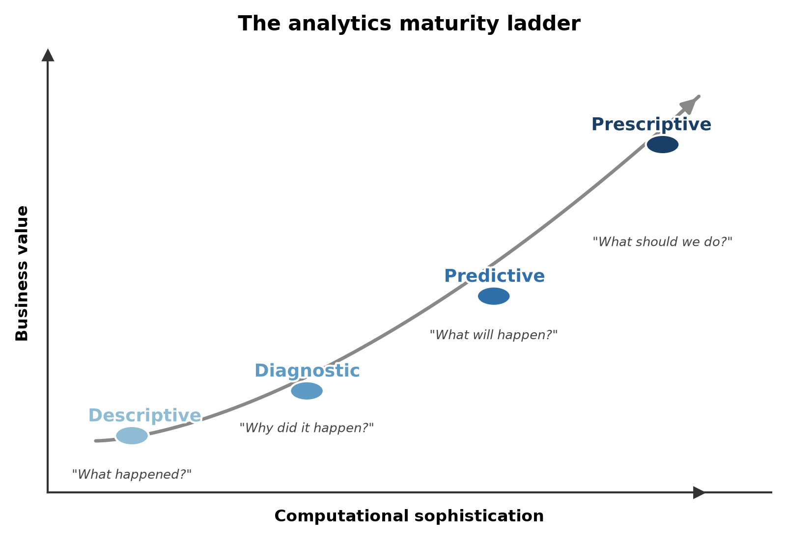
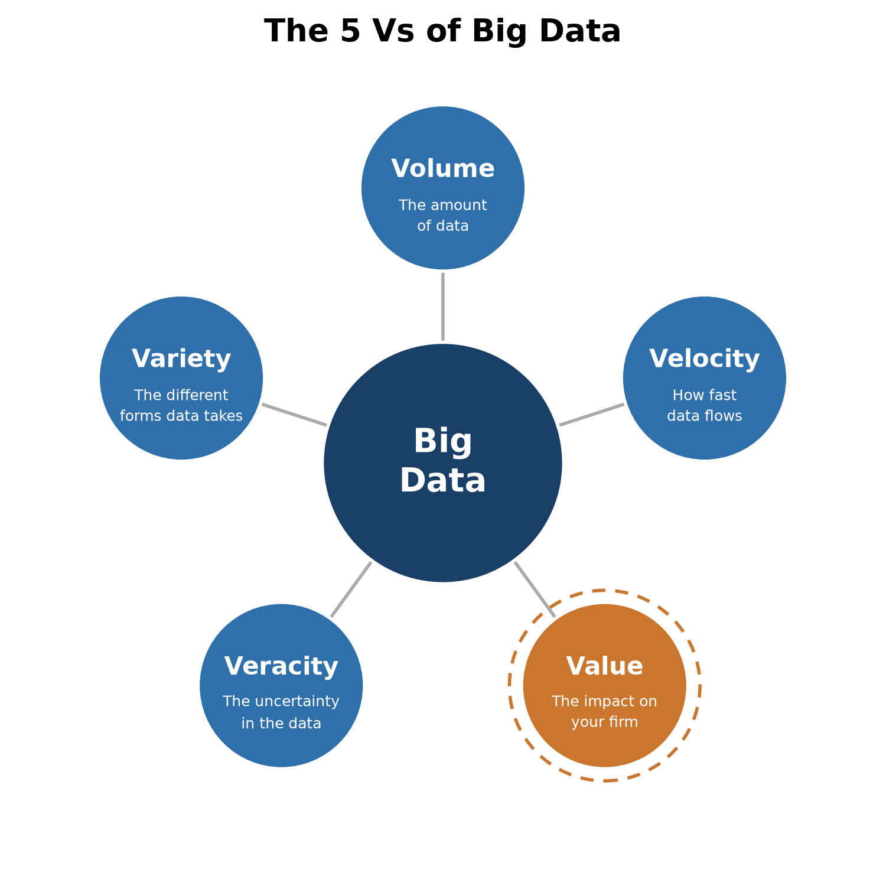
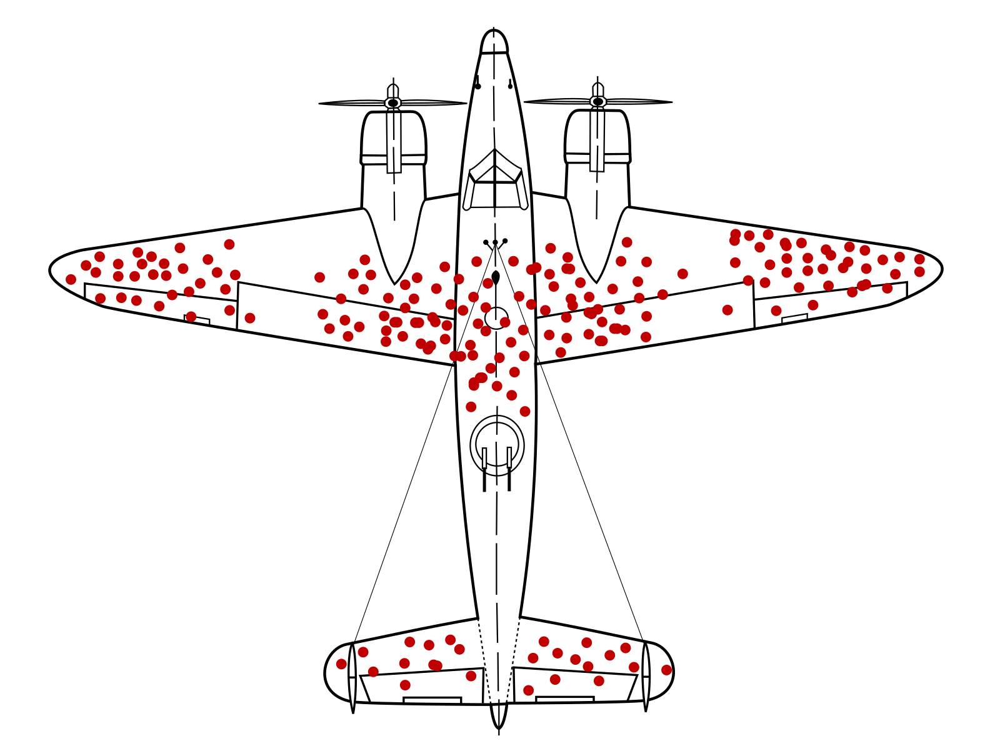
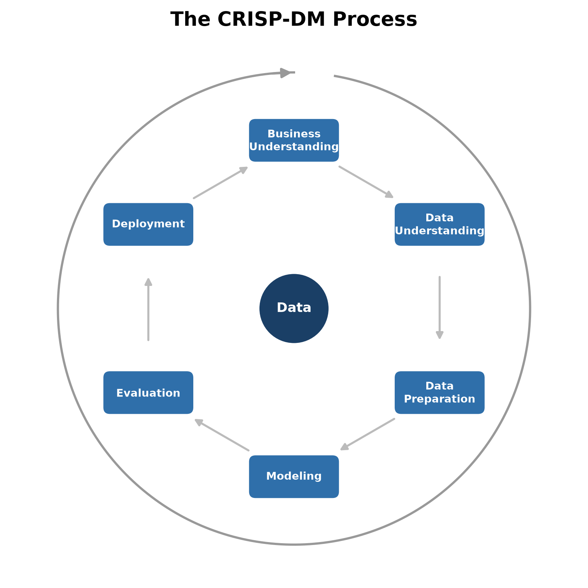

1 Introduction
Analytics has taken on a pivotal role in modern society, and we rely on it on a daily basis often without realizing it. The omnipresence of and reliance on analytics has increased sharply over the past few years, with the introduction of large language models and generative AI into everyday products. This book itself could even serve as a small example of that shift: like most writing and coding today, parts of it were co-produced and polished with the help of a generative AI assistant working with a human in the loop. The boom in LLMs and generative AI has understandably pulled artificial intelligence into the public conversation and even the kitchen table.
But generative AI is only the most visible recent chapter of a much longer history of analytics. Long before ChatGPT, Gemini and Claude, data analytical models were already quietly shaping the everyday decisions businesses make about their customers and products. When scanning your loyalty card (or mobile app nowadays) at the supermarket, a model decides which promotional folder lands in your inbox next. When scrolling through your social media feed, a ranking algorithm determines which posts are most likely to keep you engaged. On streaming services a recommender system has quietly reshuffled its entire catalogue around what it predicts you’ll want to watch or listen to next. If you apply for a loan or an insurance policy, a risk model estimates how likely you are to default or file a claim, and a bank or insurer uses that estimate to decide whether to approve your application and at what price. However, you might now assume that the realm of analytics is limited to business-to-consumer applications. It’s not! In industrial settings, analytics is used to optimize production processes, reduce energy consumption, and improve product quality. On the factory floor, sensor data feeds predictive maintenance models that monitor when a machine is likely to fail before it actually does, such that preventive actions can be taken. These models also help to decide how many spare parts to keep in stock for (unexpected) breakdowns. On a broader supply chain level, demand forecasting models also assist on how much raw material to order, how to design the manufacturing site layout, how much inventory to hold, and how many to reorder weeks in advance.
This chapter introduces what data analytics actually is, why it has become central to business decision-making, and how the rest of this book is organized around the process of turning raw data into a working analytical model.
1.1 Why data analytics now?
Three things happened at roughly the same time: the amount of data organizations collect exploded, computing power to process it became cheap, and the algorithms to make sense of it matured. Mortenson et al. (2015) call this convergence the sixth period in the century-long evolution of operational research and analytics (running from the mid-2000s to today). Given the prevalence of online data sources, businesses had continuous access to data from customers, competitors, and the general public via social networks. Even their own machines and products were being connected and continuously monitored, in the “internet of things”. That data quickly outgrew traditional databases and business intelligence architecture, giving rise to an entire new ecosystem of technologies such as Hadoop, NoSQL and NewSQL databases, and cloud computing. All these systems were built specifically to store, process, and analyze data at scale. The result is that analytical models now sit behind decisions that used to rely purely on human judgment and increasingly outperform it.
A seventh period arguably began with the arrival of generative AI, though this is our own extension, not part of Mortenson et al. (2015)’s original 2015 framework, which predates the release of ChatGPT by several years. The shift from models that describe and predict to models that generate and respond (a distinction we return to later in this chapter), and, with agentic AI, even act on their own, marks as sharp a break with the analytics period as the analytics period itself marked with what came before it.
A few examples make this concrete. In late December 2019, an AI system monitoring news reports and airline ticketing data flagged unusual pneumonia activity in Wuhan, China, days before public health authorities issued their own warnings. A nice illustration of how analytics can act as an early detection system for a signal humans hadn’t yet noticed. That signal, of course, would go on to become COVID-19, and everything else from there is history. Around the same period, revelations about Cambridge Analytica showed how predictive models built on Facebook data (e.g., likes, comments, status updates, groups, etc.) could infer personality traits and how these personality traits could be used to target voters individually. Progress has only accelerated since: modern large language models now routinely match or exceed professional-level performance on standardized exams in law and medicine, and in 2025 both OpenAI and Google DeepMind’s reasoning models achieved a gold-medal-level score at the International Mathematical Olympiad, solving 5 of the 6 contest problems under official conditions. OpenAI’s result was graded by former IMO medalists, DeepMind’s performance was independently verified by official IMO coordinators. 1 In medicine specifically, deep learning models have been shown to match or outperform radiologists at detecting breast cancer in screening mammograms.
These capabilities cut both ways. As analytical models are given more influence over decisions that affect people’s lives (e.g., credit, hiring, medical diagnosis, criminal justice) regulators have started drawing hard lines around how they can be used. One notable example of careless use of AI systems was the COMPAS (Correctional Offender Management Profiling for Alternative Sanctions) algorithm, used across the U.S. to assess a defendant’s risk of recidivism for general and violent crime. An investigation found the tool was biased against Black defendants, who were flagged as high-risk more often despite not reoffending at a higher rate. What makes the case genuinely instructive, though, is not just that the model was biased, but why: Lagioia et al. (2022) show that COMPAS was, overall, roughly equally accurate for Black and White defendants, yet it still made one particular kind of mistake, wrongly flagging someone as high-risk who never went on to reoffend, far more often for Black defendants. Trying to remove that specific problem can, in turn, make a different imbalance worse elsewhere, because the two groups didn’t reoffend at the same rate to begin with. In other words, “being fair” isn’t a single, clear-cut target a data scientist can just optimize for: different, equally reasonable ideas of what counts as fair can pull in different directions, so choosing between them ends up being as much a value judgment as a technical one.
The EU has responded to cases like this in stages. GDPR (European Parliament and Council of the European Union 2016), which became enforceable in 2018, was a first step. It doesn’t target AI specifically, but it sets out several key principles for processing personal data (among them fairness, purpose limitation, and data minimisation) together with a right to meaningful information about automated decisions made about you. We’ll come back to these principles in more detail later in this book, once we start working with real personal data ourselves. The EU AI Act (European Parliament and Council of the European Union 2024) builds on that foundation with a comprehensive, risk-based framework specifically for AI systems: it classifies applications into risk tiers, from “unacceptable” (e.g., real-time biometric scoring for social credit purposes) down to “minimal” (e.g., spam filters), with correspondingly stricter requirements for higher risks (e.g., high-stakes criminal-justice risk scoring like COMPAS).

In sum, data analytics is no longer a specialized department that runs in the back-office. It shapes what products get built, what prices get charged, who gets a loan, and increasingly, what rules govern all of the above, which is exactly why it is crucial to business and economics.
1.2 What is data analytics?
In essence, data analytics is about transforming raw data into actionable insights for business. It does so by applying descriptive, diagnostic, predictive, and prescriptive models to heterogeneous, and often large, data sources, so that organizations can make quicker, better, and more intelligent decisions that create business value.
Business analytics sits at the intersection of several disciplines: operations research, information systems, and machine learning all contribute methods. However, domain knowledge and understanding of the actual business problem determine whether those methods produce anything useful for business (Mortenson et al. 2015; Hindle et al. 2020). That combination is exactly what makes it a natural fit for business and economics students: your training gives you the technical grounding, and your business and economic mindset gives you the domain framing to point that technique at a problem worth solving.

A long list of near-synonyms for this field have been used throughout the years (mainly depending on the hype of that moment): artificial intelligence (AI), big data, machine learning, data mining, data science, deep learning, and in the old days knowledge discovery, pattern recognition. In practice, these terms overlap heavily and are often used interchangeably, though later in this chapter we’ll draw out a few real distinctions (particularly between AI, machine learning and statistics) that matter once you start building models yourself.
1.2.1 The four types of analytics
Data analytics is usually broken down into four types, distinguished by the kind of question they answer:
- Descriptive analytics describes historical trends or what happened. Reporting dashboards, business intelligence tools, and services like Google Analytics are almost entirely descriptive.
- Diagnostic analytics explains why something happened, digging into the causes behind a trend that descriptive analytics only shows you.
- Predictive analytics estimates what will happen in the future, based on patterns in historical data.
- Prescriptive analytics recommends the best next action or decision to take, given a predicted outcome.
Let’s consider a simple example to make the distinction more concrete. Imagine tracking a product’s yearly sales. Descriptive analytics plots the historical sales curve. Diagnostic analytics explains why sales dropped two years ago (a competitor launched a similar, cheaper product). Predictive analytics forecasts that, on the current trajectory, sales will keep declining next year. Prescriptive analytics recommends a concrete intervention (e.g., a price adjustment or a product redesign) to reverse that trend.
![Three stacked line charts sharing the same two series (blue and grey) across time points t-15 through t or t+1. Top panel, titled 'Descriptive analytics describes the historic trends', ends at t. Middle panel, titled 'Predictive analytics estimates the future trend', extends both series one period further to t+1, continuing their decline. Bottom panel, titled 'Prescriptive analytics tries to reverse this trend', is identical except the grey series ticks upward at t+1 instead of continuing to decline.](../images/ch01-fig-analytics-types.png)
A slightly more elaborate version of the same idea: a B2C e-commerce platform wants to optimize its pricing strategy. Descriptive analytics tells it how prices and sales have historically moved together. Diagnostic analytics uncovers why prices had an impact on sales in the past (e.g., perhaps a past price cut drove a spike in demand). Predictive analytics forecasts how a proposed price change would affect future sales. Prescriptive analytics goes one step further and recommends the actual pricing strategy (e.g., dynamic pricing, product bundling) that maximizes profit given that forecast.
These four types are also hierarchical in complexity and organizational maturity: most organizations start with descriptive analytics, move into predictive analytics as their data and modeling capabilities mature, and only later exploit prescriptive analytics: the analytics equivalent of asking not just “what will happen,” but “what should I do about it,” using optimization, simulation, and decision modeling techniques (Delen and Ram 2018). In practice the boundaries blur: an organization can be firmly in descriptive-analytics territory for most of its reporting while already piloting predictive models in one specific area.

1.2.2 AI, machine learning, and data analytics
These three terms are related but not identical:
- Artificial intelligence (AI) is the broad field of computer science dedicated to solving problems that would otherwise require human intelligence.
- Machine learning is a subfield of AI: the study of algorithms that build a mathematical model from sample (training) data in order to make predictions or decisions, without being explicitly programmed for the task. Much like a person improves at an instrument through repeated practice, a machine learning model improves its predictions as it’s given more training data.
- Data analytics uses big data and mathematical models (often, but not exclusively, machine learning models) to explain or predict a business outcome and support (and preferably improve) decision-making.
Within that space, predictive analytics deserves a closer look, since much of this book is about building predictive models. It has been defined as “the process by which a model is created or chosen to try to best predict the probability of an outcome” (Geisser 1993) and, more generally, as “the process of developing a mathematical model that generates an accurate prediction” (Kuhn and Johnson 2013). In recent years predictive analytics, data mining, and machine learning have been used almost interchangeably, but if you want a precise distinction: predictive analytics is about predicting the future, while machine learning is about predicting unseen data more generally (which is often, but not always, in the future). Under that reading, predictive analytics is a subfield of machine learning, even though the underlying algorithms are frequently identical only the setup differs.
1.2.3 Machine learning vs. statistics
It’s tempting to think that you don’t need to know statistics to do machine learning. That’s not quite right, since machine learning builds on statistical foundations. The difference between them matters for how you’ll approach modeling problems throughout this book.
- Machine learning is interested in maximizing prediction accuracy (or, equivalently, minimizing error) on unseen data. It is generally not interested in explaining why something happens. Although interpretable machine learning is an active research area (Bock et al. 2024), the objective function being optimized is still accuracy.
- Statistics, by contrast, is often more concerned with the explanatory power of a model: how do the independent variables influence the dependent variable, and by how much? This goal is rather causal analysis rather than pure prediction.
This distinction between prediction and causal analysis has practical consequences for how you build and evaluate a model. Take customer churn as a running example: a bank might build a model to predict which customers are about to leave, or a model to explain what actually causes customers to leave in the first place. Same data, sometimes even the same techniques, but the goal changes what you should worry about, along at least three dimensions:
- Omitted variables. If you’re explaining churn, leaving out a variable that both drives churn and correlates with a variable already in your model will distort your other coefficients. For example, you might conclude that high monthly charges cause churn, when really both are driven by something you failed to include, like contract type. If you’re predicting churn, that same omission only matters if adding the missing variable would have made your predictions more accurate. A distorted coefficient is irrelevant if you were never trying to isolate one variable’s true effect to begin with.
- Accuracy. A causal churn model can have fairly low explanatory power and still be useful. Even if it only accounts for a small share of the variation in churn, you can still say with confidence that a specific driver (e.g., a recent price change) has a genuine effect, especially with a large enough sample. A predictive churn model doesn’t get that amount of slack: if it can’t accurately flag which customers are actually about to leave, it’s useless for prioritizing retention offers, no matter how large the training data was.
- Multicollinearity. Suppose tenure and number of products owned are highly correlated across your customers. For a causal model, that’s a real problem since it becomes hard to say how much of the churn effect is really due to tenure vs product count, since the two are so intertwined. For a predictive model, that ambiguity barely matters: as long as the correlated variables jointly improve how well you flag at-risk customers, you don’t need to cleanly separate out each one’s individual contribution. We’ll return to multicollinearity once we dive into data preprocessing later in this book.
1.2.4 Big data and generative AI
Two developments are worth calling out explicitly, since they shape almost everything else in this field.
Big data is usually characterized by four Vs: volume (the total amount of data), velocity (how fast the data is generated and needs to be processed), variety (how many different forms the data takes, like structured, text, image, or network data), and veracity (how uncertain or noisy the data is, especially when it comes from many different, unchecked sources). In this book, we propose adding a fifth V: value. We see this as a one of the core Vs rather than an optional add-on: data that doesn’t create value for a business, in any of its processes, simply isn’t worth collecting, storing, or analyzing in the first place. Extracting that value is arguably the point of this entire book. Most routine business activity now generates data that can be stored, visualized, and analyzed, and as storage and compute keep getting cheaper, previously uneconomical analyses now become viable and create value.

Generative AI has pushed analytics from describing and predicting into responding and creating. Generative models produce text, images, audio, or video from a user-supplied prompt, after being trained on very large amounts of data. Whereas these models can respond without supplying the prompt without any training data, under the hood they’re still built on a predictive learning task: a large language model is, at its core, repeatedly predicting “given this context, what’s the most likely next word?”; an image diffusion model is repeatedly predicting “given this noisy image, what does a slightly less noisy version look like?” In this book, you should use LLMs as a learning aid. For example, as a way to generate extra practice exercises once you already understand the underlying concept. Don’t use them as a substitute for understanding the material yourself, since a tool that merely reproduces patterns it has seen before is a poor foundation on its own.
1.2.5 What makes a good analytical model
Not every model that achieves good accuracy on a test set is actually a good model for the business. Five requirements tend to come up again and again (Baesens 2014):
- Relevance. Does the model actually solve the business problem it was built for? A telecom’s data science team might build a churn model that flags customers at-risk six months before they leave only to discover the retention budget can only fund targeting customers in their final 30 days. The model is accurate but irrelevant, because nobody agreed on the decision it actually needed to support before anyone started building it.
- Performance. Does the model generalize well to new, unseen cases and not just the data it was trained on? A credit-scoring model might reach 95% accuracy on the applicants it was trained on, and then barely beat a coin flip on next month’s applicants. This concept is called overfitting: the model memorized its training data instead of learning a pattern that actually holds up. What “good performance” means varies by problem type (discrimination power for classification, cluster homogeneity for clustering). We’ll cover the relevant metrics in the chapter on model evaluation.
- Interpretability and justifiability. Interpretability means you can understand the patterns the model has captured; justifiability means those patterns are consistent with prior business knowledge and intuition (Martens et al. 2011). Amazon famously scrapped an internal AI recruiting tool after discovering it had taught itself to downgrade résumés containing words like “women’s” (e.g., “women’s chess club captain”). This is a pattern that helped predict who’d historically been hired, but one no HR department could ever justify using for obvious reasons.2 High-performing models (e.g., neural networks) are often black boxes; simpler, transparent models trade some performance for interpretability, and how much that trade-off matters depends on the setting. For example, hiring and credit decisions usually demand interpretable models, while a spam filter can happily stay a black box. However, thorough feature engineering and careful model evaluation can often produce interpretable models that are almost as accurate as black-box alternatives, so the trade-off isn’t always inevitable.
- Operational efficiency. How much effort does it take to collect the data, prepare it, evaluate the model, put it into production and afterward, to monitor it, backtest it, and re-estimate it as conditions change? For example, a fraud-detection model that takes three days to score a transaction is worthless no matter how accurate it is, since the decision to approve or block a payment has to happen in milliseconds.
- Regulatory compliance. Especially for models using personal or sensitive data, does the model comply with data protection and AI regulation, like GDPR, the EU AI Act, or sector-specific rules? For example, a lending model that never uses race as an input can still be found discriminatory if it leans heavily on a variable like zip code that correlates strongly with it. In sum, following the letter of the law isn’t enough if the outcome still discriminates in practice.
1.2.6 Data
1.2.6.1 Terminology and structure
Before working with data hands-on in the next chapters, it helps to fix some vocabulary about a data set that you’ll see used more or less interchangeably throughout this book and elsewhere:
- Independent variables: also called features, predictors, inputs, attributes, or descriptors. These are the variables you use to predict something.
- Dependent variable: also called the target, outcome, output, response, or (in classification) the label or class. This is the thing you’re trying to predict.
- Data point: a single observation, instance, or record.
- Modeling: also called model building, or training.
- Prediction: also called estimation, or inference.
Data itself comes in a few standard shapes:
- Cross-sectional data captures many units at a single point in time: one row per observation, useful for estimating a model that applies at “this moment.”
- Time series data tracks a single variable over time at regular intervals: rainfall, stock prices, sales, energy prices.
- Panel data (also called longitudinal data) combines both: repeated observations of the same units (households, products, firms) across repeated time periods.
Regardless of which of these shapes your data takes, how you arrange it also matters. Tidy data (Wickham 2014) is the standard way to structure a dataset so that later analysis (descriptive statistics, visualizations, further processing) is easy: each variable forms a column, each observation forms a row, and each type of observational unit forms its own table. A “messy” table with one column per store and one row per year, versus a “tidy” table with one row per store-year combination, contain the same information, but only one of them is easy to filter, aggregate, and model. We’ll come back to tidying data concretely once we start working with pandas.
Be aware that all data is tabular! Text, images, audio, and networks are increasingly common data sources. They require dedicated modeling approaches, though generative AI has made working with some of them (especially text and images) far more approachable than it used to be. And no dataset, tabular or not, arrives clean: missing values, outliers, and messy relationships between variables are the norm, which is exactly why data preparation and preprocessing gets its own chapter later in this book.
1.2.6.2 Data samples are always biased
Every data sample you work with is biased in some way, and it’s worth internalizing this before you trust a model’s output. The classic illustration in this case is survivorship bias. In WWII engineers were studying where returning bomber aircrafts had been hit in order to know where to add armor. The natural instinct is to reinforce the areas with the most bullet holes. However, those planes made it back! The planes that didn’t survive were hit somewhere else entirely, and that data was never collected. The correct conclusion was the opposite of the intuitive one: reinforce the spots with no damage on the survivors, since those are the hits that bring a plane down.

The business analogy is straightforward. If you build a model of “what makes a store successful” using only data from your current top-performing stores, you’ll miss out on the factors that made other locations fail and your conclusions will be biased toward the survivors. Because any sample is collected at a particular point in time, under a particular strategy and economic climate, it’s worth asking not just “is this sample biased,” but “biased in what way, and does that bias matter for the decision I’m about to make?”. For example, a model trained on pre-COVID-19 retail data might be biased toward in-store shopping behavior, and a model trained on 2020-2021 data might be biased toward online shopping behavior. If you use either of those models to make decisions about the post-pandemic retail landscape, you’ll likely make mistakes.
1.2.7 Supervised and unsupervised learning
Machine learning methods are split into two broad families, depending on whether you have a dependent variable to predict.
Supervised learning aims to approximate reality with a function: given inputs, infer a reliable pattern that maps them onto a known output. This inferred function is designed in a way that generalizes to new, unseen cases. This requires a response variable, and splits further by the type of that response:
- Classification, for a categorical or discrete response (binary, multiclass, multilabel, or ordinal).
- Regression, for a continuous or numerical response (predicting either an absolute value or a change (delta) in value).
Supervised models are also commonly grouped by how they represent the underlying relationship:
- Parametric models first assume a functional form for the relationship (e.g., linear), then estimate a fixed number of parameters for that form. This is much easier to estimate, but performs poorly if the assumed functional form doesn’t match reality.
- Nonparametric models make no such assumption and let the data determine the shape of the relationship. This is far more flexible and can be more accurate, but typically needs substantially more data. The danger is that it can end up fitting noise rather than signal (“too accurate” on the training data, at the expense of generalization on the test data).
Unsupervised learning has no dependent variable, only independent variables, and is correspondingly more subjective to evaluate. Its goals include:
- Clustering: finding homogeneous subgroups in the data.
- Dimensionality reduction: compressing many variables down to two or three for visualization.
- Association rule mining: finding “if antecedent, then consequent” rules that describe co-occurring patterns (e.g., market basket analysis).
- Anomaly detection: finding outliers or anomalies that don’t fit the rest of the data.
1.3 The data analytics process: CRISP-DM
Producing a reliable, robust analytical model isn’t something you improvise: practitioners follow a fixed framework that lets a project be carefully defined, organized, and structured. The two best-known frameworks are KDD or Knowledge Discovery in Databases (Fayyad et al. 1996) and, more widely used today, CRISP-DM or the Cross-Industry Standard Process for Data Mining (Chapman et al. 2000).

CRISP-DM organizes an analytics project into six phases:
- Business understanding: determine the business objectives and translate them into data mining goals.
- Data understanding: describe and explore the available data, and identify data quality issues.
- Data preparation: select, clean, construct, aggregate, and integrate data into a single basetable containing every variable you’ll model with.
- Modeling: set up a proper test design, select an appropriate modeling technique, and build and interpret the model.
- Evaluation: evaluate the model using appropriate performance metrics.
- Deployment: put the model into production.
CRISP-DM is considered the gold standard process because it’s well documented, widely adopted, and more clearly organized than competing processes. Two things are worth knowing before you start your own first project. First, data understanding and preparation are consistently the most time-consuming steps: often cited as taking up to 80% of total project time! Second, the process is iterative, not linear. You will regularly find yourself going back a step (or several) once something you learn in modeling changes what you thought you understood about the data.
This same six-phase structure maps directly onto how the rest of this book is organized: the coming chapters on data understanding, data preparation, model evaluation, and modeling each correspond to one phase of CRISP-DM, applied in a business setting.
1.4 Where data analytics shows up
Data analytics is genuinely everywhere in modern business, not just in usual tech companies, and well beyond the handful of examples already mentioned in this chapter’s opening. A streaming platform’s next-series recommendations, the dynamically adjusted fare prices on a ride-hailing app, a spam filter quietly sorting your inbox, an automatic reorder triggered the moment a warehouse’s stock dips below a threshold, a warning signal when the condition of an industrial asset deteriorates: all of these are analytics applications running in the background of ordinary business operations.
More systematically, applications span nearly every business function:
| Marketing | Finance | Manufacturing & Operations | Supply Chain & Logistics | Public Sector | Digital & Other |
|---|---|---|---|---|---|
| Response and uplift modeling | Credit scoring | Predictive maintenance | Demand forecasting | Tax fraud detection | Web and social media analytics |
| Customer churn | Fraud detection | Condition monitoring | Route and network optimization | Social benefit fraud detection | A/B and multivariate testing |
| Customer segmentation | Market risk modeling | Spare-parts inventory optimization | Warehouse and inventory management | Money laundering detection | Misinformation and rumor detection |
| Market basket analysis | Operational risk modeling | Personnel and shift scheduling | Security and terrorism risk detection | Hospitality and tourism analytics | |
| Recommender systems | Quality control and defect detection | HR analytics | |||
| Healthcare analytics | |||||
| Learning analytics |
Two applications are worth walking through in a bit more detail, since they recur throughout this book.
Customer churn prediction. Analytical customer relationship management (CRM) uses modeling techniques on customer characteristics and behavior to support cost-effective, targeted marketing for acquisition modeling, up-sell and cross-sell modeling, customer lifetime value estimation, and churn modeling. Churn, defined as the loss of a customer, matters because acquiring a new customer typically costs five to six times more than retaining an existing one (Bhattacharya 1998), and established customers tend to be more profitable and more likely to refer others (Poel and Larivière 2004). Churn prediction models assign each customer an individual propensity to churn, so the company can proactively target the highest-risk customers with a retention offer before they leave, rather than reactively after the fact. Useful features typically include demographic variables, relationship variables (tenure, number of products), and RFM variables (Recency, Frequency, and Monetary value) of past purchases. Because comprehensibility lets business experts sanity-check a churn model and understand what’s actually driving churn, logistic regression is often treated as the gold standard here: easy to interpret, reasonably accurate, and well understood in both research and practice.
Credit risk modeling. Credit scoring is concerned with assessing financial risk and informing lending decisions: a credit score is a model-based estimate of the probability that a borrower will default and fail to meet their financial obligations (Lessmann et al. 2015). Consumer loans and mortgages often exceed corporate lending in total volume at the country level, which is exactly why credit scoring has been called “one of the most successful applications of statistics and OR in industry” (Crook et al. 2007). It’s also one of the most mature and heavily benchmarked applications of predictive analytics in business. Despite a steady stream of more complex algorithms, logistic regression has remained a surprisingly hard baseline to beat in practice (Lessmann et al. 2015). There are two main types of credit scoring models: application scorecards and behavioral scorecards. Application scorecards score new credit applications for creditworthiness, typically built from two snapshots; application data and credit bureau data. Both snapshots are taken at loan origination matched against whether the applicant actually defaulted 12 or 18 months later. Behavioral scorecards go further, scoring the existing customer portfolio using both application data and behavioral trends (account balance movement, delinquency history,credit limit changes), and tend to outperform application scorecards since they have more (and more current) information to work with.
1.5 Why Python
The data, AI, analytics, and machine learning tooling landscape is enormous. Ranging from off-the-shelf business-intelligence (BI) tools optimized for point-and-click visual analysis on one end, to full programming languages on the other. As a business student, you’ll mostly work with the programming-language end of that spectrum, since it’s what gives you the flexibility to go beyond what an off-the-shelf BI tool can do.
Among programming languages, Python and R have long been the two dominant choices for data science, but Python has clearly emerged as the winner in recent years when measured by job postings, community size, and package ecosystem maturity. Python wasn’t originally designed as a data science language, but it became the standard one for several reasons:
- its syntax is logical and comparatively easy to learn;
- it’s genuinely general-purpose, useful for everything from short scripts to full enterprise applications;
- its ecosystem includes a handful of foundational packages this book relies on directly (
numpy,pandas,matplotlib,scikit-learn, among others); - and it has an enormous community across Stack Overflow, GitHub, and beyond, so help is rarely far away.
One more note before you start writing Python yourself: large language models (LLMs) are useful coding assistants for debugging, for explaining unfamiliar code, for generating extra practice exercises, but they are not a substitute for understanding the fundamentals. An LLM doesn’t reason about your code from first principles; it produces output based on patterns it has seen before, and that output is often subtly wrong. The proper order is to learn the basics and write the code yourself first, and use an LLM to accelerate that process second and not the other way around.
1.6 How this book is organized
The chapters that follow mirror the CRISP-DM process introduced above, applied consistently to a single running business case so techniques build on each other instead of feeling like disconnected exercises:
- Python for Data Analytics: the Python fundamentals used throughout the rest of the book.
- Data Understanding: manipulating, and making sense of raw datasets.
- Data Exploration: visualizing data to find patterns and relationships and quality issues. In CRISP-DM terms, this is part of the data understanding phase, but we separate it out because it’s a distinct skill set that deserves its own chapter.
- Data Preparation: cleaning, and transforming data so it’s ready for modeling.
- Model Evaluation: how to set up a fair experiment and measure whether a model is any good, before worrying about which model to use.
- Modeling: building and interpreting linear and logistic regression models.
If you’re setting up Python and an IDE for the first time, see the installation guide in the appendix.
“AI Reasoning Models Achieve Gold-Medal Performance at the International Mathematical Olympiad”, IntuitionLabs, accessed 2026.↩︎
Dastin, J. (2018). “Amazon scraps secret AI recruiting tool that showed bias against women.” Reuters, October 10, 2018.↩︎